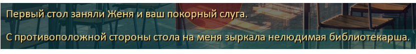
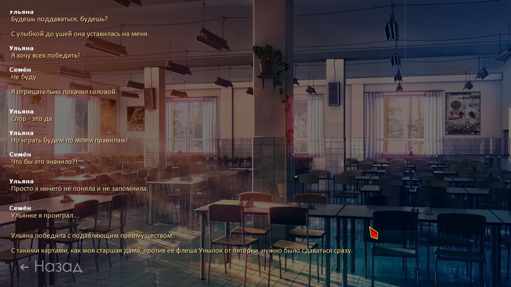

Технические вопросы и предложения
Страница 1 из 3 • 1, 2, 3 
Re: Технические вопросы и предложения
автор nuttyprof в Пн 28 Сен 2015 - 21:28
Кажись, домучил я и турнир второго дня, и покер в турнире тоже.
Для БЛ версии 1.1, релиз мода - любой (турнир тестовый, с модом, теоретически, вообще пересекаться не должен); откатывалось на основе 022.b. На 023.d прогонял сегодня пару десятков раз, вылетов и сбоев не зафиксировано.
Скачать можно тут: https://yadi.sk/d/14jGW-6wjNwac
- Что в архиве:
В архиве одна папка ~Test с четырьмя файлами. Её распаковать и поместить в папку мода (scenario_alt).
Версия турнира - тестовая, требует доработки; для релиза нужно будет:
- выбросить тестовую отсебятину (гонял турнир и покер взад, вперёд и по кругу); для теста эти выборы и повторы оставил, в релизе они явно будут лишними.
(такое как: повторная жеребьёвка, бесконечные раванши с одним и тем же соперником и т. п.) Дабы потом меньше искать, в коде отсебятину выделял.
- переименовать некоторые переменные, пересекающиеся с модом (в тесте добавлены суффиксы "_test";
- некоторые функции также будут переработаны, для релиза таких "крокодилов" не потребуется, думаю.
Текстовая часть - практически полностью авторская, кое-что добавлено для логических связок, например: ( ПРОВЕРКА ОБЩЕГО СЛОВАРЯ. Шурик выиграл у Ульяны. ).
Возможно, кое-где в переходах между блоками текста будут несостыковки; движок всего лишь позволяет что-то сказать тому или иному персонажу по какому-либо поводу (кто с кем попал за стол, кто у кого выиграл и на каком этапе и т. п), а вот что именно сказать - тут уж прерогатива товарища автора.
Да, так как у нас тут покер, нужно было как-то обозвать масти наших карт. Я просто названия этих мастей нигде не встречал; честно говоря, особо тщательно не искал, но и на слуху не попадалось. Если что не так - переименовать несложно.
То же касается названий покерных комбинаций.
Хотя и гонялось это всё достаточно долго, логические жуки-пауки вроде повыловлены, тем не менее, свой глаз "замыливается", потому товарищей и господ тестеров
прошу погонять турнир, как можно интенсивно, на предмет обнаружения логических нестыковок.
- Например:
- Соответствие показываемых спрайтов и фишек на таблице и называемых имён (например, Лену показываем, говорим: "Ульяна");
- Соответствие победителей и проигравших (правильно называем, правильно сажаем за столы, правильно пересаживаемся);
- Поскольку используются покерные комбинации - правильность их распознавания, сравнения старшинства, названий карт, мастей и т. д. и выделения в конце,
чтобы не получилось, например, так: названо правильно, старшинство - правильно, карты/масти правильно, а выделено - только по четыре карты.- Неправильно выделена комбинация:

Кстати, это покер на семи картах (да, можно и по семь сдавать)
Это основное; если же ещё что-либо неправильного обнаружится по логике, построению, работе функций - прошу всё это в эту тему.
- Что там ещё есть:
1. Помимо флагов побед в этапах турнира (и чека по ним) - флаги побед над соперниками (и чеки по этому параметру). То есть: если у Шурика не выигрывали ещё - с ним нужно либо играть, либо сдаваться (быстрое поражение). Быстрая победа - только после успешной игры с ним.
2. Программа "помнит", кто и как отыграл очередной турнир - и эти данные можно добыть в других днях по необходимости; вроде были ссылки на результат турнира у той же Лены в руте.
Более того, (правда, не знаю, зачем это может пригодиться) ведется статистика и выводится некий "рейтинг". Т. е. "Сегодня %(пионер) сыграл %(вот так), а обычно он играет %(вот эдак).
3. Полностью рандомная рассадка, выбор игры на шести или семи картах, выбор очерёдности хода.
4. Есть режим "Хочу почувствовать себя %(пионером)". Попробуйте. Да, не удивляйтесь, они именно так и играют, с точки зрения обработчика.
А потому - в планах пока - научить (хотя бы Алиску) не кидаться картами, а играть в покер.
Идеи есть, как, реализация начата, но. Я в покер, холдемы и т. п. не игрец, я больше по преферансу.
Огромная просьба заинтересованным и опытным товарищам - какова бы была ваша логика игры, если бы напротив Семёна за столом сидели именно вы?
Исходные данные:
- программа знает, что именно оказалось на руках соперника и как меняется ситуация после своего и чужого хода;
- программа "понимает", что Семён полез за "нужной" картой;
- программа помнит "свою" карту, вынутую Семёном, и может её отследить и забрать обратно;
- программа может выбрать "ненужную" карту для обмена, и может её отдать "сразу", не перетасовывая,
- программа может отследить, что Семён пытается вернуть именно эту вынутую у него карту - и делает вывод, что, скорее всего, разбита исходная комбинация и Семён пытается её восстановить.
А вот с логикой обработки исходных - пока не очень.
(подразумевается, что соперник карт Семёна не видит, хотя Ульянку обучу мухлевать )
)
Что приоритетнее - спасать свою комбинацию или пытаться разбить комбинацию Семёна?
Как распознать, что у Семёна точно что-то нужное выхвачено, и не отдавать обратно?
В общем,самимынеместные,помогите, кто чем может.

nuttyprof- Хикка

- Сообщения : 102
Дата регистрации : 2015-05-25
Возраст : 45
Откуда : Юг
Re: Технические вопросы и предложения
автор Dantiras в Пн 28 Сен 2015 - 23:01
Небольшое общее (не особо существенное) нарекание: при жеребьёвке 1/4 финала происходит оглашение пар оппонентов, в т.ч. пары нашего ГГ. По тексту всё выходит логично, но де-факто происходит дубляж информации.
- примеры:


Теперь о странности. При ролле полуфинала наткнулся на Ульянку, но самого матча не произошло - спрайт Ульянки пропал как при запуске матча, но запуска игры не случилось. Текст приведён ниже (как видно, выбор режима игры также не воспроизводился).
- СКРИН с воспроизведёными строками:


Dantiras- Мизантроп

- Сообщения : 615
Дата регистрации : 2015-08-17
Re: Технические вопросы и предложения
автор 7dl-kun в Пн 28 Сен 2015 - 23:43

7dl-kun- Находка для шпиона

- Сообщения : 3026
Дата регистрации : 2014-09-07
Откуда : здесь столько наркоманов?
Re: Технические вопросы и предложения
автор Dantiras в Пн 28 Сен 2015 - 23:50
С этим там всё просто великолепно. На самом деле, если бы не тот незапустившийся матч, то можно было бы по движку сказать, что всё идеально. Строки в анализаторе воспроизводятся правильно, зависимости порядка текста от турнирной сетки персонажей (той ошибки, что я выкладывал вчера) здесь нет.7dl-kun пишет:Главное, чтобы не было смещений в жеребьёвке и выдаче результатов, как это было у меня.
Немного подразукрасить диалоги с повествованием и будет прекрасный "пасьянсик".
Dantiras- Мизантроп
- Сообщения : 615
Дата регистрации : 2015-08-17
Re: Технические вопросы и предложения
автор nuttyprof в Вт 29 Сен 2015 - 0:35
Dantiras пишет:
Небольшое общее (не особо существенное) нарекание: при жеребьёвке 1/4 финала происходит оглашение пар оппонентов, в т.ч. пары нашего ГГ. По тексту всё выходит логично, но де-факто происходит дубляж информации.
КМК здесь стоит изменить текст с описания того, кто именно занял место напротив ГГ, на какие-нибудь более разнообразные строки. Например, вместо "... на меня зыркала нелюдимая библиотекарша" использовать что-то вроде "Библиотекарша одарила меня очередным испепеляющим взглядом". И про оппонента сказали, и дубляжа информации не получилось.
Да. есть такое. Там фразы собираются из нескольких словарей, некоторые рандомно притом - т. е. если даже и попадется одинаковый расклад по игрокам - фразы будут разные + специально для персонажа конкретного что-то.
Тут автору работа, я и лезть не пытался, бо шедевры моего творчества в литературном жанре - это "Инструкция по эксплуатации и техническому обслуживанию системы ПАЗ и технологического регулирования %(марка оборудования)"; не совсем то, что нужно для ВН.
Dantiras пишет:
Теперь о странности. При ролле полуфинала наткнулся на Ульянку, но самого матча не произошло - спрайт Ульянки пропал как при запуске матча, но запуска игры не случилось. Текст приведён ниже (как видно, выбор режима игры также не воспроизводился).
Пока такой случай отловил только у неё и только на этой стадии.
Если идёт пропуск первого тура и полуфинала на финал - часть диалогов обрезается для экономии времени (тестовый режим) - только начало остаётся (скорее всего, и вывод спрайта прихватил); в релизе можно вывести полностью. Да и, ЕМНИМС. при транзите со старта на финал полуфинал тоже обходится. Если я правильно понял, если Сёма продувает в первом туре - он уходит в некоторых случаях, после проигрыша в реваншах - точно уходит, сказано прямым текстом; потому - что дальше происходит - того может не видеть, а вот после проигрыша в 1/2 - что-то вроде "я занял место среди болельщиков".
Это всё настраивается включением\выключением обходов; - рандомизатор там работает, и рассадит, кого куда надо, и результат нарандомит.
Последний раз редактировалось: nuttyprof (Вт 29 Сен 2015 - 0:40), всего редактировалось 1 раз(а)
nuttyprof- Хикка
- Сообщения : 102
Дата регистрации : 2015-05-25
Возраст : 45
Откуда : Юг
Re: Технические вопросы и предложения
автор Dantiras в Вт 29 Сен 2015 - 0:40
Разобрался, спасибо. Только прочитав, вспомнил, что меня первоначально завернули с попытки выбора "проиграть в полуфинале" перед четвертьфинальной игрой. Пришлось сыграть матч, но я не подозревал, что факт моего выбора сохраняется. Больше нареканий по механике не обнаружил.nuttyprof пишет:Если идёт пропуск первого тура и полуфинала на финал - часть диалогов обрезается для экономии времени (тестовый режим) - только начало остаётся (скорее всего, и вывод спрайта прихватил); в релизе можно вывести полностью. Да и, ЕМНИМС. при транзите со старта на финал полуфинал тоже обходится. Если я правильно понял, если Сёма продувает в первом туре - он уходит, после реваншей - так точно, потому - что дальше может не видеть, а вот после проигрыша в 1/2 - что-то вроде "я занял место среди болельщиков".
Это всё настраивается включением\выключением обходов; - рандомизатор там работает, и рассадит, кого куда надо, и результат нарандомит.
Dantiras- Мизантроп
- Сообщения : 615
Дата регистрации : 2015-08-17
Re: Технические вопросы и предложения
автор nuttyprof в Вт 29 Сен 2015 - 0:52
У кого возможность есть - погоняйте на разных платформах (Win 7, 8, 10), Мак, и .д.
Потому - откатывал на машине с Win7 проф (рабочий ноут, промышленная версия) - две недели всё нормально.
Вотпрямщас катаю на планшете с (нехорошее слово) Win 10 - рассадка финала слетает через раз - "не найден индекс в списке"... Обратно то же на семёрку - всё нормально.
Чудеса....
nuttyprof- Хикка
- Сообщения : 102
Дата регистрации : 2015-05-25
Возраст : 45
Откуда : Юг
Re: Технические вопросы и предложения
автор Элдхэнн в Вт 29 Сен 2015 - 1:16
QTE was merely a set back!nuttyprof пишет:Вечер в хату.
- программа знает, что именно оказалось на руках соперника и как меняется ситуация после своего и чужого хода;
- программа "понимает", что Семён полез за "нужной" картой;
- программа помнит "свою" карту, вынутую Семёном, и может её отследить и забрать обратно;
- программа может выбрать "ненужную" карту для обмена, и может её отдать "сразу", не перетасовывая,
- программа может отследить, что Семён пытается вернуть именно эту вынутую у него карту - и делает вывод, что, скорее всего, разбита исходная комбинация и Семён пытается её восстановить.[/i]

Элдхэнн- Людовед

- Сообщения : 1002
Дата регистрации : 2015-03-30
Возраст : 38
Откуда : Москва
Re: Технические вопросы и предложения
автор Dantiras в Ср 30 Сен 2015 - 3:05
Её суть заключается в отсутствии анимации первого обмена карт при условии, что оппонент ходит первым. Для семикарточный игры этот фактор немаловажный, поскольку перестаёшь понимать где именно находится только что вытащенная у тебя карта. То же самое характерно и для шестикарточной игры при условии, что оппонент ходит первым
Пример первого обмена карт №1. Условие: Шурик ходит первым. Игра в 6 карт.
Пример первого обмена карт №2. Условие: Шурик ходит первым. Игра в 7 карт.
Важно отметить, что в первой игре на турнире, где объясняются принципы семикарточной игры, проблемы нет, и анимация обмена работает как и должна. Абсолютно нормально работает анимация и остальных обменов по ходу матча кроме рассматриваемого случая.
Если это возможно, то стоит добавить анимацию в первый обмен карт при условии, что оппонент ходит первым, а также (если это опять-таки возможно) показывать стрелкой какую именно карту противник собирается предоставить нам при будущем обмене в семикарточном режиме.
Dantiras- Мизантроп
- Сообщения : 615
Дата регистрации : 2015-08-17
Re: Технические вопросы и предложения
автор nuttyprof в Ср 30 Сен 2015 - 8:46
Принято, посмотрю что там такое.
В первом случае обмен был произведён по условию "отказ от защиты" - я правильно понял?
- Спойлер:
Этот кусок кода - перемещение и обмен карт - я вообще не трогал; они как были в оригинальном движке - так и тянутся оттуда; по идее - время перемещения ненулевое (строго говоря, оно зависит от расстояния между перемещаемыми картами, т. к. задаётся скорость перемещения, а она - постоянна; время же - вычисляется и передаётся в функции перемещения карт).
Теоретически, использование неоригинальных функций обработки карточного стола могло повлиять и на перемещения - проверю и это.
"Маркировка" отдаваемой карты на семикарточном раскладе - вроде бы должна быть, проверю это.
Может быть ещё - что нет задержки между "маркировкой" и "передачей" - т. е. стрелка появляется (она всегда появляется под/над "маркированной" картой, но "увидеть" её мы просто не успеваем - если что, добавлю задержку туда.
Да, выловил у себя косячок в коде обработки результата.
- Спойлер:
На "своём" первом ходе и семикарточном раскладе при подведении итогов могли "маркироваться" не все карты комбинации;
при том, что комбинация распознаётся и называется верно.
Погоняю ещё сегодня, может эти баги там не последние; фикс тогда чуть позже выложу.
- По 'почти умным' соперникам:
"Защищать" свои карты они уже обучены:
- если заинтересовавшая вас карта входит в комбинацию - он вместо неё вам подсунет ненужную;
- если заинтересовавшая вас карта не в комбинации - он "подумает" и либо отдаст её сразу (т. е. "тасовать" карты не будет; аналог кнопки "отказ от защиты); либо "поменяет" - но также на ненужную ему карту.
С остальными функциями пока работа идёт - не всё и не всегда получается так, как хотелось бы.
UPD
С отсутствием анимации в первом круге обменов на первом ходу соперника разобрался (хотя странно, почему это вообще возникало, цепочки вызова функций аналогичны в первом и во втором круге).
nuttyprof- Хикка
- Сообщения : 102
Дата регистрации : 2015-05-25
Возраст : 45
Откуда : Юг
Re: Технические вопросы и предложения
автор Dantiras в Ср 30 Сен 2015 - 11:51
На самом деле и по условию "отказ от защиты", и по нормальной двукратной защитке карты, и при обмене по правилам Ульяны анимация отсутствует. Это происходит только в случае первого хода противника при выборе "Первым ходишь ты" или рандомном решении, что первым ходит он. В 1/4 финала это не отслеживается, поскольку идёт объяснение игры в 7 карт и анимация проигрывается как нужно. Но и в 1/2, и в финале, и в матчах-реваншах анимация перестаёт работать конкретно на первом ходу.nuttyprof пишет:Доброе утро.
В первом случае обмен был произведён по условию "отказ от защиты" - я правильно понял?
В дальнейшем все ходы показываются чётко.
Dantiras- Мизантроп
- Сообщения : 615
Дата регистрации : 2015-08-17
Re: Технические вопросы и предложения
автор nuttyprof в Ср 30 Сен 2015 - 12:59
Исправлено:
- отсутствие анимации перемещения карт при первом ходе соперника в первом круге обменов;
- неполное выделение карт комбинации при подведении итогов игры;
- при раздаче по семи карт, при ходе соперника, соперник "отмечает" свою карту перед обменом карт.
И ещё (проклятый склероз).
Поправил давно, а исправить забыл - это о семикарточной игре.
В ходе турнира, когда вызывается объяснение игры на семи картах, фраза:
давно неактуальна.Свою карту выбираем {b}внимательно - \"откатить\" выбор не получится.
"Откатить" свою карту, выбранную для обмена, можно. Для этого нужно кликнуть по ней ещё раз, появится возможность выбрать другую.
Один файл: https://yadi.sk/d/lkI3mxJrjR4q2
Скопировать его в папку ~Test с заменой.
nuttyprof- Хикка
- Сообщения : 102
Дата регистрации : 2015-05-25
Возраст : 45
Откуда : Юг
Re: Технические вопросы и предложения
автор Коллекционер в Чт 1 Окт 2015 - 23:20
1. Защищать свою комбинацию или разбить Семёна? Думаю, если твоя комбинация одна из самых высоких - защищать. Если нет - то разбивать.

Коллекционер- Мизантроп
- Сообщения : 929
Дата регистрации : 2015-09-19
Re: Технические вопросы и предложения
автор Draug в Чт 1 Окт 2015 - 23:30

Draug- Мизантроп
- Сообщения : 964
Дата регистрации : 2015-06-27
Возраст : 28
Откуда : Цитадель
Re: Технические вопросы и предложения
автор Коллекционер в Чт 1 Окт 2015 - 23:32
Возможно, но становится ещё сложнееDraug пишет:А возможно ли сделать для каждого игрока свою тактику ? Кто-то защищается, подменивая карты и возвращая свои, кто-то следит за игроком, выдёргивая на его взгляд важные карты
Коллекционер- Мизантроп
- Сообщения : 929
Дата регистрации : 2015-09-19
Re: Технические вопросы и предложения
автор Draug в Чт 1 Окт 2015 - 23:49
На восьмёрке полёт вроде нормальный, прошёлся по всем вариантамnuttyprof пишет:Да, и ещё что попросить хотел.
У кого возможность есть - погоняйте на разных платформах (Win 7, 8, 10), Мак, и .д.
Потому - откатывал на машине с Win7 проф (рабочий ноут, промышленная версия) - две недели всё нормально.
Вотпрямщас катаю на планшете с (нехорошее слово) Win 10 - рассадка финала слетает через раз - "не найден индекс в списке"... Обратно то же на семёрку - всё нормально.
Чудеса....
Draug- Мизантроп
- Сообщения : 964
Дата регистрации : 2015-06-27
Возраст : 28
Откуда : Цитадель
Re: Технические вопросы и предложения
автор nuttyprof в Пт 2 Окт 2015 - 9:17
По тактике игроков.
- Пока катаю такой вариант:
"Нападать" пробовал. Не зная точно карт соперника - бесполезно.
Решил "нападение" сделать подвидом "защиты" - ходов с анализом - всего два: второй и третий, было бы 5-6 - был бы смысл.
Прослеживается, правда, два момента:
- если Семён отдаёт карту сразу (отказ от защиты) - и она сопернику "не к рукам" - вот эту-то карту Семёну соперник и будет подсовывать в первую очередь, т. е. скорее всего она Сёмёну и не нужна-то особо;
- если Семён карту защищал до упора - вопрос: а нужна ли эта карта? Может, вредничал просто?
(лично так дурил свой же алгоритм)
Думаю, так: если вынутая карта "к рукам" или Семён потянулся за ней сразу - тогда потасуем. Если ни одно из этих условий - можно и отдать.
Алгоритмов вообще планируется два - для Ульянки с её стилем игры и для остальных (настраиваемый).
Для Ульяны - режим тоже можно сделать настраиваемым.
Режимов пока два - (условно) "думающий" (ну, почти) и "включили дурака" - Это крайние.
В обоих режимах соперник всё видит, помнит и делает выводы; отличие - в действиях.
В "думающем" режиме - выбор действий производится по анализу ситуации.
Если сопернику "включить дурака" - действия полностью рандомные (этот режим вы уже видели - в "классике" все рандомно картами шлёпают).
Третий же режим - "настраиваемый рандом" - соперник может "ошибиться" при своём или чужом ходе, вероятность совершения ошибки - настраиваемая, может задаваться для каждого соперника и на каждом этапе игры.
Например:
- соперники "учатся играть" - в первом туре вероятность "ошибки" 50%; в полуфинале - 25%; в финале - не ошибаются.
- соперники у нас разные: А - играть не умеет и учиться не собирается (постоянный рандом); Б - играет слабо, но учится; В - играть умеет изначально и т. д.
Можно ещё (если будет приемлемо) сделать зависимость степени рандома от ЛП девчонок... да много вариантов можно придумать.
nuttyprof- Хикка
- Сообщения : 102
Дата регистрации : 2015-05-25
Возраст : 45
Откуда : Юг
Re: Технические вопросы и предложения
автор Moonshine в Пт 2 Окт 2015 - 13:54
Вопросы есть лишь по тексту, но он, как я понял, еще будет правиться.
Можно также прикрутить нарочный слив. Для товарищей явно не желающих играть(Женя, например). Хотя и озвученный рандом, вероятно, подойдет.

Moonshine- Маргинал

- Сообщения : 341
Дата регистрации : 2015-05-05
Re: Технические вопросы и предложения
автор Dantiras в Пт 2 Окт 2015 - 16:07
1) Поскольку мод постепенно уходит от важности получения дополнительных ЛП с девочками в карточной игре, я считаю, что здоровый азарт должен иметь место у всех и не быть подвязанным на полученные ЛП;
2) Вместо предыдущего пункта было бы интереснее увидеть проекцию характера персонажа на стиль карточной игры:
а) Например, возьмём Шурика. Человек, очевидно, неглупый, но несклонный к откровенному риску. Потому было бы логично, если бы он цеплялся даже за мизерные собственные комбинации;
б) Теперь обратим свой взор на Алису. "Девочка-пожар, девочка-брызги". Если у неё на руке без 1 карты стрит/флэш, мне кажется, она стала бы рисковать и отдала бы противнику даже часть своей небольшой комбинации (вроде пары двоек) ради возможной победы с большим перевесом;
3) Запомнить кипу комбинаций за три игры новичку - очень трудно. Видеть пары и тройки - возможно, стрит и флэш - сомнительно. Потому на персонажа вроде Мику (которая, очевидно, играет в эту игру впервые) можно распространить некую вероятность ошибиться с парами/тройками в четвертьфинале (далее пусть видит их нормально), но видение стрита/флэша стоит и вовсе исключить.
Dantiras- Мизантроп
- Сообщения : 615
Дата регистрации : 2015-08-17
Re: Технические вопросы и предложения
автор nuttyprof в Пт 2 Окт 2015 - 18:16
- Спойлер:
"Нарочный слив" - добавлю, ничего сложного, "перевернутая" защита - меняем местами стек "нужных" и "ненужных" карт соперника - и "нужные" - т. е. те, что в комбинации, а если комбинации нет - самые крупные - сбрасываем Семёну.
Вместо "нападать" - КМК, работать режим не будет, - введу "рискнуть" (смысл, действительно, есть) - пожертвовать парой при наличии "недострита"/"недофлеша".
Проверку наличия на руках "недофлешей" (4 масти) и "недостритов" (4 подряд) - (пока такого не было, распознавалось только наличие собранных комбинаций и ухудшение/улучшение ситуации) - добавлю в код обязательно.
На защите, КМК правильным, у этого режима будет второй приоритет (т. е. более важно - не отдать своё), на риске - первый без комбинации на руках или со слабой комбинацией; если на руках что-то стоящее (тройка и выше) - рисковать не будем.
Отслеживать от трёх карт - не знаю, смысл есть? Одну можно теоретически получить; две - куда как тяжелее.
"Недофлеши" - совсем просто, распознавалка флешей в комбинации со сниженным порогом с 5 на 4.
С "недостритами" чуть сложнее (4 варианта), но тоже решаемо, думаю.
Возможные "недостриты" (пример):
В-10-9-8 (4 подряд, не хватает Д или 7);
Д-10-9-8(1+3, не хватает В);
Д-В-9-8(2+2, не хватает 10);
Д-В-10-8 (3+1, не хватает 9)
Вызываться это будет:
- либо в функции определения соперника на конкретную игру, с передачей параметров поведения игрока;
- либо определением каждому игроку своих каких-то особенностей.
nuttyprof- Хикка
- Сообщения : 102
Дата регистрации : 2015-05-25
Возраст : 45
Откуда : Юг
Re: Технические вопросы и предложения
автор Chess в Пт 2 Окт 2015 - 21:18

Chess- Находка для шпиона
- Сообщения : 3798
Дата регистрации : 2014-10-05
Откуда : Город на краю света
Re: Технические вопросы и предложения
автор openplace в Пт 2 Окт 2015 - 22:35

openplace- Хикка
- Сообщения : 111
Дата регистрации : 2015-05-02
Re: Технические вопросы и предложения
автор openplace в Пт 2 Окт 2015 - 22:47
- трейсбэк:
- I'm sorry, but an uncaught exception occurred.
While running game code:
File "game/scenario_alt/~Test/alt_card_game_engine.rpy", line 853, in script
File "game/scenario_alt/~Test/alt_card_game_engine.rpy", line 877, in python
File "game/scenario_alt/~Test/alt_card_game_engine.rpy", line 195, in python
NameError: global name 'alt_name_my_rival_r' is not defined
-- Full Traceback ------------------------------------------------------------
Full traceback:
File "C:\Games\Everlasting Summer\renpy\bootstrap.py", line 265, in bootstrap
renpy.main.main()
File "C:\Games\Everlasting Summer\renpy\main.py", line 327, in main
run(restart)
File "C:\Games\Everlasting Summer\renpy\main.py", line 78, in run
renpy.execution.run_context(True)
File "C:\Games\Everlasting Summer\renpy\execution.py", line 509, in run_context
context.run()
File "C:\Games\Everlasting Summer\renpy\execution.py", line 288, in run
node.execute()
File "C:\Games\Everlasting Summer\renpy\ast.py", line 720, in execute
renpy.python.py_exec_bytecode(self.code.bytecode, self.hide, store=self.store)
File "C:\Games\Everlasting Summer\renpy\python.py", line 1304, in py_exec_bytecode
exec bytecode in globals, locals
File "game/scenario_alt/~Test/alt_card_game_engine.rpy", line 877, in <module>
show_cards_alt() # показываем карты
File "game/scenario_alt/~Test/alt_card_game_engine.rpy", line 195, in show_cards_alt
ui.text("%s %s - %s" % ("У", alt_name_my_rival_r, alt_name_rival_poker_hand),style="button_text",size=23)
NameError: global name 'alt_name_my_rival_r' is not defined
Windows-post2008Server-6.2.9200
Ren'Py 6.16.3.502
Everlasting Summer 1.0
openplace- Хикка
- Сообщения : 111
Дата регистрации : 2015-05-02
Re: Технические вопросы и предложения
автор nuttyprof в Сб 3 Окт 2015 - 8:35
openplace пишет:Та же система, после предыдущей успешной игры последовательность выборов: роль Дрищ + не давать никому ЛП + обнулить флаги + обнулить статистику + пометить карты = вылет:
While running game code:
File "game/scenario_alt/~Test/alt_card_game_engine.rpy", line 853, in script
File "game/scenario_alt/~Test/alt_card_game_engine.rpy", line 877, in python
File "game/scenario_alt/~Test/alt_card_game_engine.rpy", line 195, in python
NameError: global name 'alt_name_my_rival_r' is not defined
Интересный вылет.
Это новый движок игры соперника не опознал - в части вывода текста на стороне соперника "У %(соперника) %(такая-то) комбинация".
Т. е. карты раздали; а соперника перед тем не распознали.
Попробую воспроизвести - видимо, при обходах где-то этап опознавания соперника пропустился.
nuttyprof- Хикка
- Сообщения : 102
Дата регистрации : 2015-05-25
Возраст : 45
Откуда : Юг
Re: Технические вопросы и предложения
автор openplace в Сб 3 Окт 2015 - 20:22
Тем временем удалось вылететь вновь, но перед тем заметить, где именно. Система та же (Win 10 64-bit), воспроизведение действий делалось с учётом действий, которые были сделаны до предыдущего вылета, т.е. persistent не выбрасывался никуда. Последовательность выборов: Дрищ - Пометить карты - ЛП не даём никому - Показать комбинации - Сбросить статистику и рейтинги Нашлось уточнение, на каком месте выбрасывает. Это происходит ещё до момента, как ОД рвёт бумажки и предлагает тянуть, то есть до начала собственно турнира и даже до начала собственно обучения. Вылет случается после строчки 721 alt_test_kards.rpynuttyprof пишет:openplace пишет:Та же система, после предыдущей успешной игры последовательность выборов: роль Дрищ + не давать никому ЛП + обнулить флаги + обнулить статистику + пометить карты = вылет:
While running game code:
File "game/scenario_alt/~Test/alt_card_game_engine.rpy", line 853, in script
File "game/scenario_alt/~Test/alt_card_game_engine.rpy", line 877, in python
File "game/scenario_alt/~Test/alt_card_game_engine.rpy", line 195, in python
NameError: global name 'alt_name_my_rival_r' is not defined
Интересный вылет.
Это новый движок игры соперника не опознал - в части вывода текста на стороне соперника "У %(соперника) %(такая-то) комбинация".
Т. е. карты раздали; а соперника перед тем не распознали.
Попробую воспроизвести - видимо, при обходах где-то этап опознавания соперника пропустился.
openplace- Хикка
- Сообщения : 111
Дата регистрации : 2015-05-02
Страница 1 из 3 • 1, 2, 3